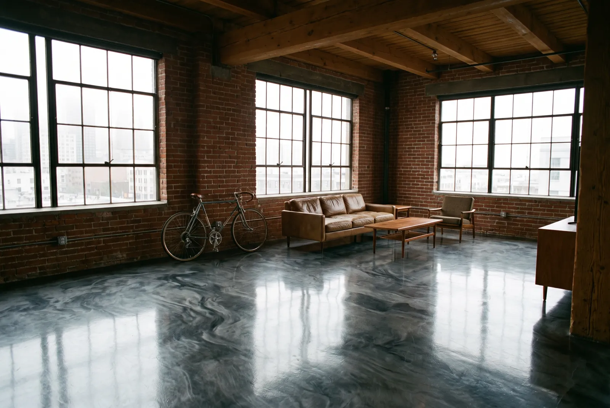
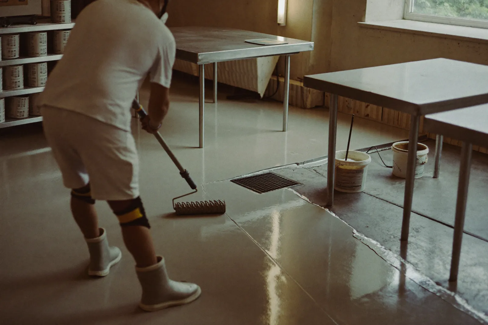

Floor Coatings We Install
Four coating systems, all built on the same careful prep. Pick the one that matches how you use the space.

Garage Floor Epoxy
A flake system over a ground slab, sealed with a clear topcoat that handles hot tires, oil drips and wet shoes.
Garage floor epoxy details
Polyaspartic Coatings
A fast-curing, UV-stable system that handles cool temperatures and can have the car back inside the next day.
Polyaspartic coating details
Metallic Epoxy Floors
Hand-worked metallic pigment for lofts, studios, showrooms and garage gyms that should look as good as the rest of the home.
Metallic epoxy flooring details
Commercial & Kitchen Floors
Seamless, washable systems with coved base for restaurants, breweries, retail and offices, installed around your hours.
Commercial epoxy flooring details